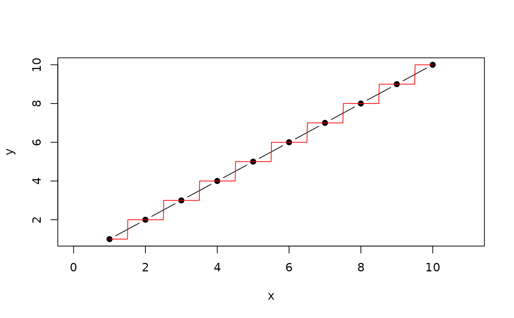

extends approx which always takes the right or left neighbour
or the weighted mean between both if f>0<1
Usage
ApproxNearest(x, y, xout, rule = 1)
Arguments
- x
numeric vector giving the coordinates of the points to be interpolate
- y
corresponding y values
- xout
set of numeric values specifying where interpolation is to take place.
- rule
an integer (of length 1 or 2) describing how interpolation is
to take place outside the interval see ?approx
Value
a list with components 'x' and 'y', containing
length(xouth) coordinates which interpolate the given data points
Examples
x<-1:10
y<-1:10
xout<-seq(from=0,to=11,by=0.01)
plot(x,y,type="b",pch=19,xlim=range(xout))
result<-ApproxNearest(x,y,xout)
lines(result,col="red")
